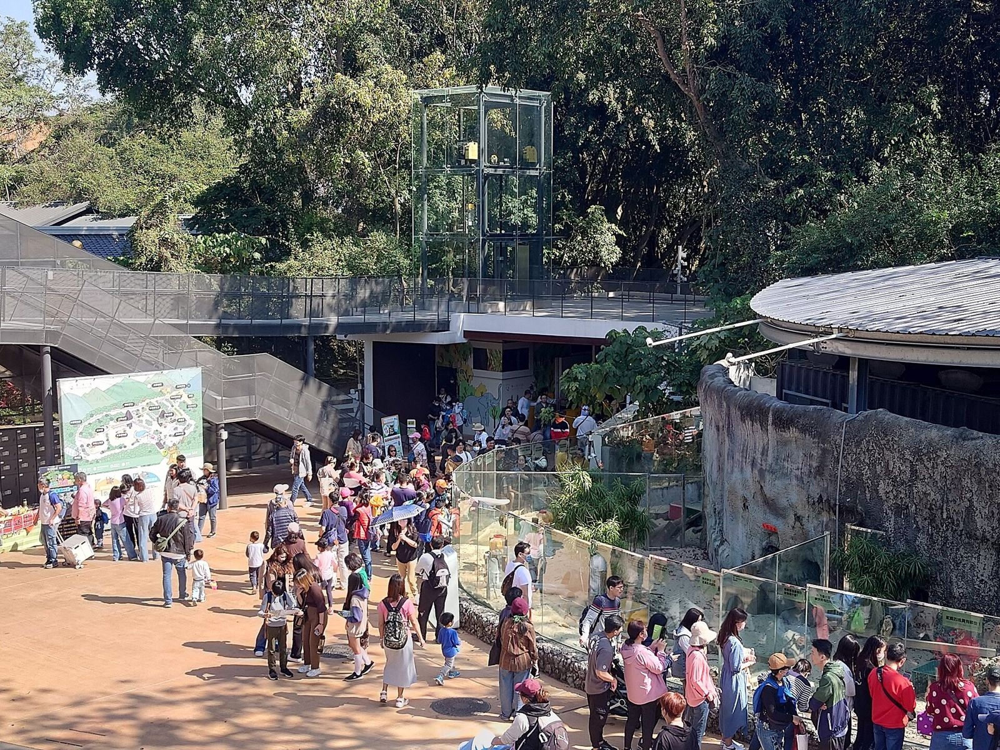

서우산 동물원 입장권과 근처 맛집, 동물 보고 어디서 먹을까?
가오슝 시내 산 위 동물원을 둘러본 다음, 지도에 등록된 근처 맛집까지 한 번에 챙겨보세요.
게시
서우산 동물원(壽山動物園)은 가오슝 시내 서우산(壽山) 자락에 있는 시립 동물원이에요. 高雄市壽山動物園 공식 사이트를 바탕으로 2026년 10월 기준으로 정리했어요.
01 · 서우산 동물원은 어떤 곳일까
가오슝 시내에서 가까운 산 위 동물원이라 아이와 반나절 나들이로 가기 좋아요. 아이와 갈 때 챙길 점은 서우산 동물원 입장권·아이 동반 팁 글에 따로 정리해뒀어요.

02 · 가기 전에 알아둘 것
원숭이 주의 서우산에는 야생 원숭이가 많아요. 음식이나 비닐봉지를 손에 들고 다니지 마세요.
월요일 휴무 월요일은 쉬지만 공휴일이면 열어요. 음력 섣달 그믐날도 쉬어요.
입장 마감 16:30에 입장을 마감해요.
03 · 가는 법
버스 56번 버스로 동물원 앞까지 가요.
04 · 운영 시간과 요금 (2026년 10월 기준)
| 내용 | |
|---|---|
| 운영 시간 | 화~일 09:00~17:00 (입장 마감 16:30) |
| 휴무 | 월요일(공휴일은 운영), 음력 섣달 그믐날 |
| 입장료 | 일반 NT$40, 6~17세 NT$20, 6세 미만 무료 |
05 · 둘러본 뒤 들르기 좋은 근처 맛집
아래 거리는 지도에 등록된 좌표로 잰 직선거리라 실제 이동 거리는 더 길 수 있어요.
Song Dang Yeshi Restaurant 送噹夜市餐廳 · 태국 · 남쪽 약 0.9km 지도 메모: 태국 밀크티가 지금까지 먹은 것 중 최고였고, 겉바속촉 닭구이도 아이가 잘 먹었다.
라오디엔 바이홍 루자오 옌청점 · 대만식 · 남동쪽 약 1.0km 지도 메모: 미쉐린 빕 구르망 선정점이며 현지인이 많았고, 5,000원의 행복이었다고 평가함.
아이지 조식 · 조식 · 남동쪽 약 1.1km 지도 메모: 현지인 포장이 이어졌고, 바삭한 딴삥이라 추천한다고 씀.
柒壹喫堂x鹽海小餐館 · 대만식 · 남동쪽 약 1.2km 지도 메모: 직원이 메뉴를 친절히 설명해주고, 설렁탕과 똠얌 사이 느낌의 국물·옥수수·오징어 요리가 독특하고 맛있다.
京華餐廳 · 훠궈 · 남동쪽 약 1.3km 지도 메모: 현지 친구들의 강력 추천으로 갔고 음식 하나하나 다 맛있었으며 쏸차이 훠궈가 특히 유명하다고 소개.
옌청 우자 금귤 또우화 · 빙수 · 남동쪽 약 1.4km 지도 메모: 금귤또우화가 더운 날씨에 정말 잘 어울리는 맛이라고 평가함.
류제 전통 판투안·단삥 전문점 · 조식 · 남동쪽 약 1.4km 지도 메모: 현지인 전화·포장이 많은 조식집이며, 뤄보까오와 판투안이 맛있다고 평가함.
가게마다 쉬는 날과 영업시간이 다르니 방문 전 구글맵에 등록된 영업시간을 확인하세요.
지도에서 가오슝 맛집도 확인해보세요
동물원 일정 앞뒤로 들를 가오슝 맛집을 지도에서 함께 찜해두세요.